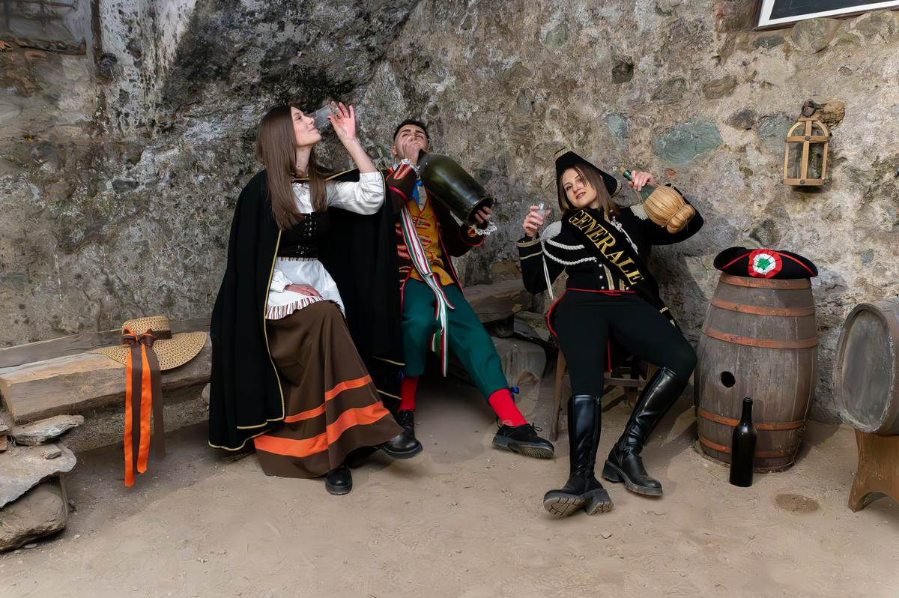
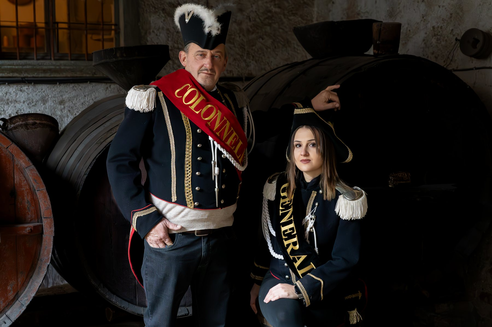

CAVAGLIÀ · BIELLA · DAL 1974
IL CARVÉ
È DI TUTTI.
Fagiolata, maschere, musica, cucina e persone. Una tradizione che ogni inverno rimette in moto tutto il paese.
FAGIOLATA✦GIANDUJA & GIACOMETTA✦GENERALE & COLONNELLO✦SERATE✦CUCINA✦BAMBINI✦
FAGIOLATA✦GIANDUJA & GIACOMETTA✦GENERALE & COLONNELLO✦SERATE✦CUCINA✦BAMBINI✦
01
NON È SOLO UNA FESTA
È IL PAESE
CHE SI METTE
IN MOTO.
Dell’esistenza del Carnevale si trovano tracce da tempo immemore nella memoria dei Cavagliesi. Nel 1974 nasce l’attuale Comitato Carnevale Benefico di Cavaglià, dando una forma ufficiale a una tradizione già profondamente radicata.
Da allora generazioni diverse si ritrovano per preparare ogni dettaglio: raccolta dei fagioli, sonetto, cucina, serate, maschere e la grande fagiolata.
Scopri tutta la storia →02
IL CUORE DEL CARVÉ
FASEU
GRASS.
La fagiolata è uno dei momenti più sentiti del Carnevale: più di sessanta paioli, preparati dai Fasulat e Salamat, prendono vita fin dalle prime ore del mattino.
È lavoro, fumo, legna, ricette tramandate e soprattutto persone che si ritrovano ogni anno nello stesso posto per fare qualcosa insieme.
DENTRO IL CARNEVALE
OGNI MOMENTO
HA IL SUO RITMO.
Dal pomeriggio dei bambini alle notti nel padiglione, dalla cucina alle maschere: il Carvé cambia faccia, ma resta sempre lo stesso spirito.

01
Il Comitato
Dietro ogni edizione ci sono settimane di preparazione, volontari e tanta voglia di far vivere la tradizione.

02
Le Maschere 2026
I volti dell’ultima edizione, tra tradizione, investitura e voglia di stare insieme.

03
Generale & Colonnello
Lo Stato Maggiore accompagna il paese dalla consegna delle chiavi fino al passaggio di consegne.

04
Una comunità
Grandi, giovani e bambini: il Carnevale funziona perché ognuno ci mette qualcosa di suo.
03
PROSSIMA EDIZIONE
2027
STIAMO PREPARANDO IL PROSSIMO CARVÉ
Il programma arriverà qui.
Appena saranno definite date, cene, serate e appuntamenti della nuova edizione, questa diventerà la pagina più veloce per trovare tutto.
ULTIMA EDIZIONE
53ª · 5–8 MARZO 2026
Quattro giorni di festa, cucina, fagiolata e serate nel Salone Polivalente.
04
COME SI VIVE IL CARVÉ
UN RITO CHE
TORNA OGNI ANNO.
6 GENNAIO
Investitura di Generale e Colonnello, presentazione di Gianduja e Giacometta e consegna delle chiavi del paese.
I PREPARATIVI
Raccolta dei fagioli, distribuzione del sonetto e settimane di lavoro del Comitato e dei collaboratori.
LA FESTA
Pranzi, cene, musica, bambini, maschere, bar e appuntamenti che coinvolgono tutto il paese.
LA FAGIOLATA
I paioli fumano in piazza e i fagioli vengono benedetti, degustati e distribuiti alla popolazione.